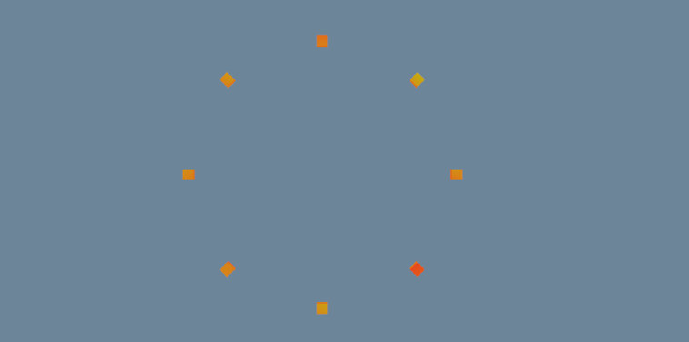
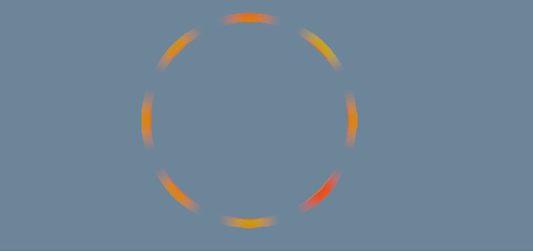
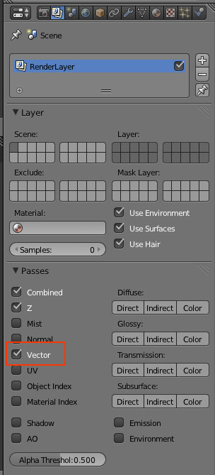
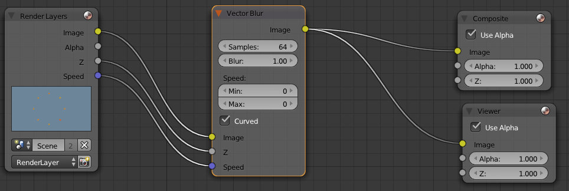

No Blender existem duas formas de criar Motion Blur:
Método 1: Existe no painel de Render a opção para ativar Motion Blur (e este é configurável). Este método permite criar um efeito mais correto/exato mas é mais lento (é como se renderizasse diversas vezes a mesma frame). Adicionalmente, quando utiliza este método, o Motion Blur é aplicado na imagem final renderizada não permitindo posterior manipulação, deixa de ter acesso à imagem sem o efeito.
Método 2: Através do compositor de nós (Vector Blur) e da Render Pass Vector podemos aplicar e manipular o Motion Blur na etapa de composição. A Render Pass Vector permite isolar a informação da velocidade dos movimentos. É o método mais rápido e que permite maior liberdade criativa.
A imagem abaixo é o render sem qualquer efeito de Motion Blur de uma animação criada com um círculo de 8 cubos que rodam em torno de um eixo central.
A imagem abaixo corresponde exatamente à mesma frame da imagem acima. A única diferença é que foi aplicado um efeito de Motion Blur através do compositor.
Para utilizar esta Render Pass, é preciso que exista movimento (não existe Motion Blur sem Motion...) e esteja ativada a Render Pass Vector.
No Node Editor, utiliza o nó Vector Blur (Filter) para manipular o Motion Blur através da informação presente no Z e Speed.
